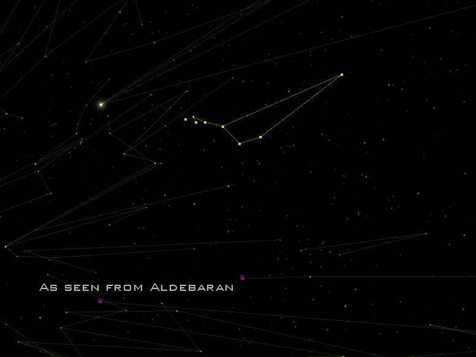
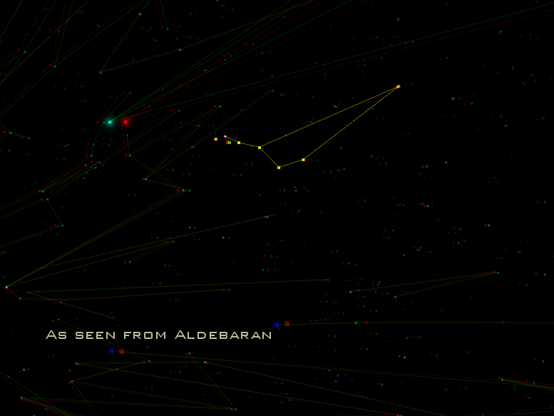

This video shows the Big Dipper from various positions in space: Duluth, Regulus, Pollux, Castor, Aldebaran, and back to Earth. I created the video with Celestia, a free astronomy program. Download the video. The video is in Ogg Theora format; VLC is a free video player that will play it.
The stars marked with purple at the bottom of the screen from Aldebaran are Castor, to the right, and Pollux, to the left.

I also created a 3D version of the video using neTear’s 3D anaglyph patch for Celestia. Download the 3D video. You will need red-cyan 3D glasses, which you can purchase at many locations online. I bought mine from Rainbow Symphony.
The Celestia script I used to generate the movie is available here.
Thanks to Chris Laurel and the rest of the Celestia development team for creating Celestia. I would also like to thank Marco Klunder, who helped with the script.
Return to the main Big Dipper page.
I love the view source command and you should, too.
Copyright Lithis, 2011.